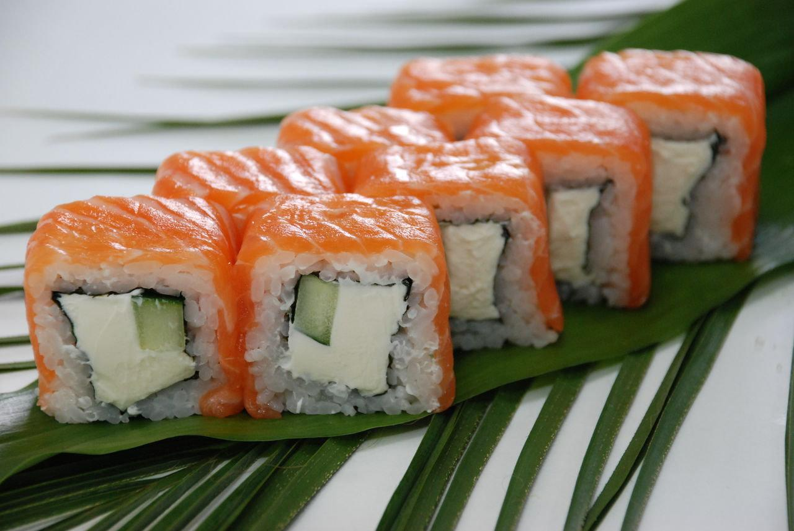
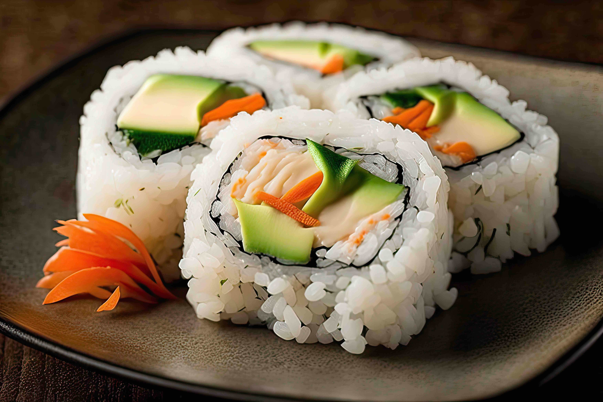

Ролл «Филадельфия»
Нежная классика: свежий лосось и сливочный сыр.
Смотреть рецепт →Здесь вы найдете лучшие пошаговые инструкции по приготовлению роллов и суши дома.

Нежная классика: свежий лосось и сливочный сыр.
Смотреть рецепт →
Яркий ролл с икрой тобико и снежным крабом.
Смотреть рецепт →